P2
Outline
-
Optimal Control
-
Model-based Approaches vs. Model-free Approaches
-
Sampling-based Optimization
-
Reinforcement Learning
-
Conclusion
P3
Recap
| feedforward | feedback |
|---|---|
| 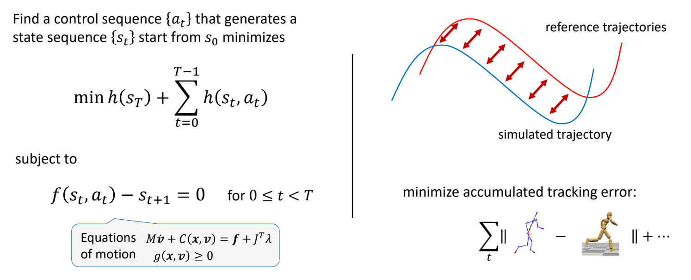 | 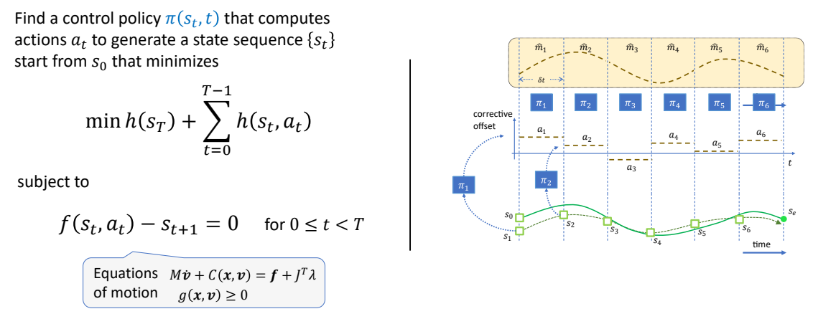 |
| 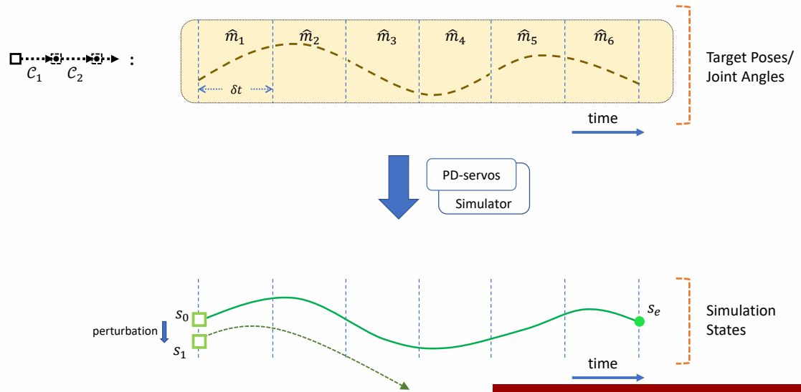 | 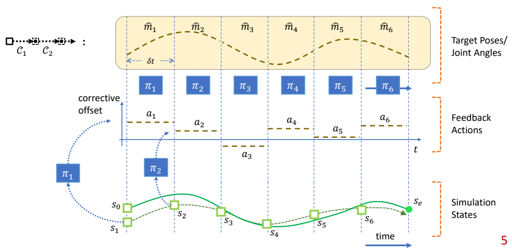 |
✅ 开环控制：只考虑初始状态。
✅ 前馈控制：考虑初始状态和干挠。
✅ 前馈控制优化的是轨迹。
✅ 反馈控制优化的是控制策略，控制策略是一个函数，根据当前状态优化轨迹。
P9
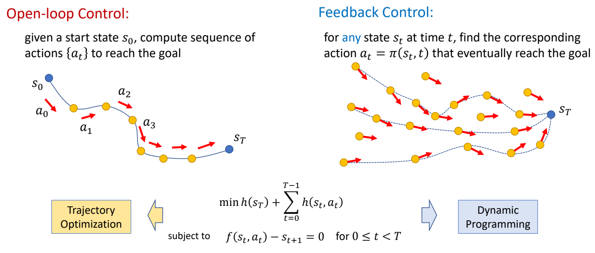
✅ Feedback 类似构造一个场，把任何状态推到目标状态。
P10
开环控制
问题描述
$$ \begin{matrix} \min_{x} f(x)\\ 𝑠.𝑡. g(x)=0 \end{matrix} $$
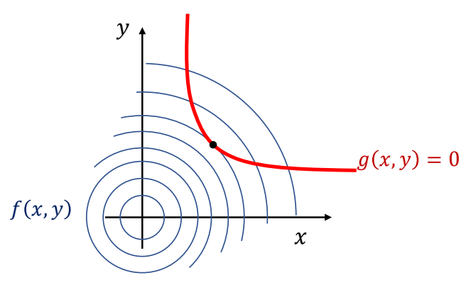
P12
把硬约束转化为软约束
$$ \min_{x} f(x)+ wg(x) $$
\(^\ast \) The solution \(x^\ast\) may not satisfy the constraint
P16
Lagrange Multiplier - 把约束条件转化为优化
✅ 拉格朗日乘子法。
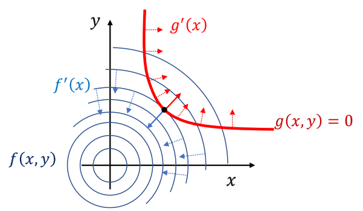
✅ 通过观察可知，极值点位于\({f}'(x)\) 与 \(g\) 的切线垂直，即 \({f}' (x)\) 与 \({g}' (x)\) 平行。（充分非必要条件。）
因此：
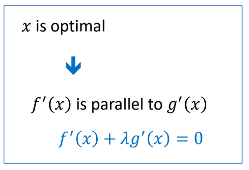
Lagrange function
$$ L(x,\lambda )=f(x)+\lambda ^Tg(x) $$
✅ 把约束条件转化为优化。
P18
Lagrange Multiplier
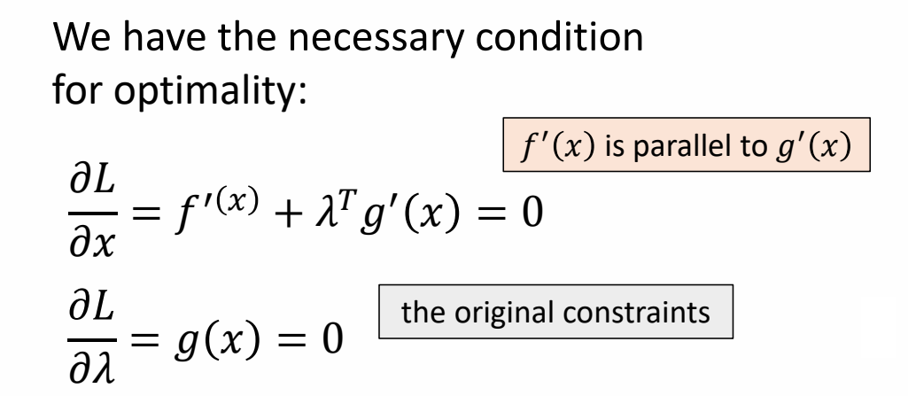
✅ 这是一个优化问题，通过梯度下降找到极值点。
P20
Solving Trajectory Optimization Problem
定义带约束的优化问题
Find a control sequence {\(a_t\)} that generates a state sequence {\(s_t\)} start from \(s_o\) minimizes
$$ \min h (s_r)+\sum _{t=0}^{T-1} h(s_t,a_t) $$
✅ 因为把时间离散化，此处用求和不用积分。
subject to
$$ \begin{matrix} f(s_t,a_t)-s_{t+1}=0\\ \text{ for } 0 \le t < T \end{matrix} $$
✅ 运动学方程，作为约束
转化为优化问题
The Lagrange function
$$ L(s,a,\lambda ) = h(s _ T)+ \sum _ {t=0} ^ {T-1} h(s _t,a _t) + \lambda _ {t+1}^T(f(s _t,a _t) - s _ {t+1}) $$
P27
求解拉格朗日方程
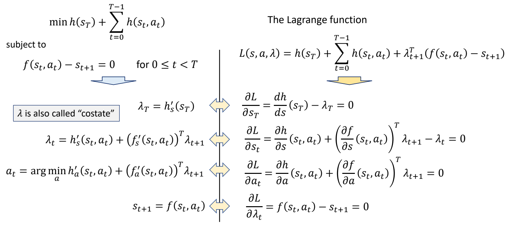
✅ 拉格朗日方程，对每个变量求导，并令导数为零。因此得到右边方程组。
✅ 右边方程组进一步整理，得到左边。
✅ \(\lambda \) 类似于逆向仿真。
✅ 公式 3：通过转为优化问题求 \(a\)．
P30
Pontryagin’s Maximum Principle for discrete systems
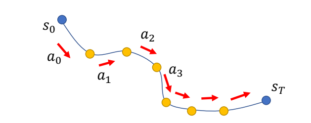
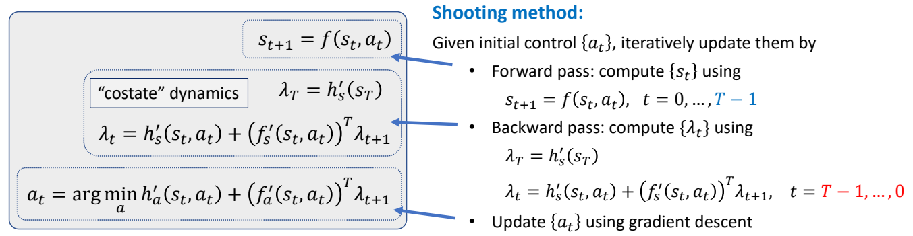
✅ 方程组整理得到左边，称为 PMP 条件。是开环控制最优的必要条件。
P32
Optimal Control
Open-loop Control:
given a start state \(s_0\), compute sequence of actions {\(a_t\)} to reach the goal
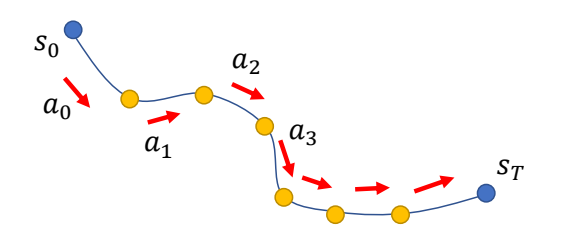
Shooting method directly applies PMP. However, it does not scale well to complicated problems such as motion control…
\(
\)
Need to be combined with collocation method, multiple shooting, etc. for those problems.
\(
\)
Or use derivative-free approaches.
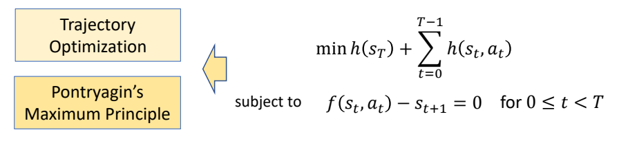
✅ 对于复杂函数，表现比较差，还需要借助其它方法。
闭环控制
P34
Dynamic Programming
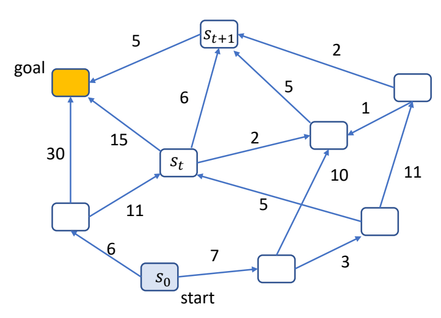
希望找到一条最短路径到达另一个点，对这个问题用不同的方式建模，会得到不同的方法：
| 动态规划问题 | Find a path {\(s_t\)} that minimizes | \(J(s_0)=\sum _ {t=0}^{ } h(s_t,s_{t+1})\) |
| 轨迹问题 | Find a sequence of action {\(a_t\)} that minimizes | \(J(s_0)=\sum _ {t=0}^{ } h(s_t,a_t)\) subject to \( s_{t+1}=f(s_t,a_t)\) |
| 控制策略问题 | Find a policy \( a_t=\pi (s_t,t)\)或 \( a_t=\pi (s_t)\)that minimizes | \(J(s_0)=\sum _ {t=0}^{ } h(s_t,a_t)\) subject to \(s_{t+1}=f(s_t,a_t)\) |
P39
Bellman’s Principle of Optimality
✅ 针对控制策略问题，什么样的策略是最优策略？
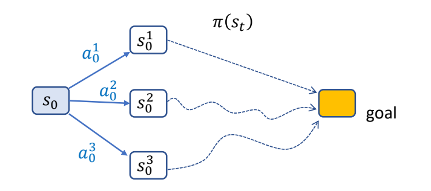
An optimal policy has the property that whatever the initial state and initial decision are, the remaining decisions must constitute an optimal policy with regard to the state resulting from the first decision.
\(^\ast \) The problem is said to have optimal substructure
P40
Value Function
Value of a state \(V(s)\) :
- the minimal total cost for finishing the task starting from \(s\)
- the total cost for finishing the task starting from \(s\) using the optimal policy
✅ Value Funcron，计算从某个结点到 gool 的最小代价。
✅ 后面动态规划原理跳过。
P49
The Bellman Equation
Mathematically, an optimal value function \(V(s)\) can be defined recursively as:
$$ V(s)=\min_{a} (h(s,a)+V(f(s,a))) $$
✅ h代表s状态下执行一步a的代价。f代表以s状态下执行一步a之后的状态。
If we know this value function, the optimal policy can be computed as
$$ \pi (s)=\arg \min_{a} (h(s,a)+V(f(s,a))) $$
✅ pi代表一种策略，根据当前状态s找到最优的下一步a。
✅ This arg max can be easily computed for discrete control problems.
But there are not always closed-forms solution for continuous control problems.
or
$$ \begin{matrix} \pi (s)=\arg \min_{a} Q(s,a)\\ \text{where} \quad \quad Q(s,a)=h(s,a)+V(f(s,a)) \end{matrix} $$
Q-function称为State-action value function
Learning \(V(s)\) and/or \(Q(s,a)\) is the core of optimal control / reinforcement learning methods
✅ 强化学习最主要的目的是学习 \(V\) 函数和 \(Q\) 函数，如果 \(a\) 是有限状态，遍历即可。但在角色动画里，\(a\) 是连续状态。
P52
Linear Quadratic Regulator (LQR)
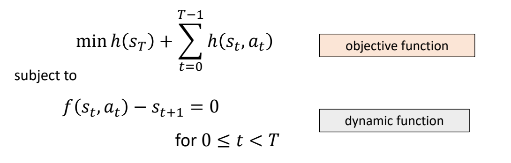
- LQR is a special class of optimal control problems with
- Linear dynamic function
- Quadratic objective function
✅ LQR 是控制领域一类经典问题，它对原控制问题做了一些特定的约束。因为简化了问题，可以得到有特定公式的 \(Q\) 和 \(V\).
P53
A very simple example
问题描述
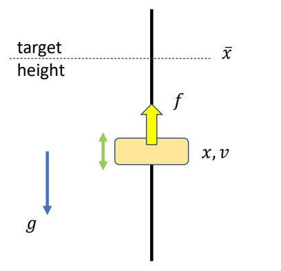
Compute a target trajectory \(\tilde{x}(t)\) such that the simulated trajectory \(x(t)\) is a sine curve.
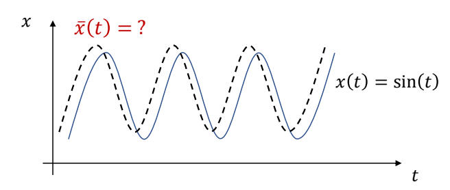
$$ \min _{(x_n,v_n,\tilde{x} _n)} \sum _{n=0}^{N} (\sin (t_n)-x_n)^2+\sum _{n=0}^{N}\tilde{x}^2_n $$
$$ \begin{align*} s.t. \quad \quad v _ {n+1} & = v _ n + h(k _p ( \tilde{x} _ n - x _ n) - k _ dv _ n ) \\ v _ {x+1} & = x _ n + hv _ {n+1} \end{align*} $$
P54
objective function
$$ \min s^T_TQ_Ts_T+\sum_{t=0}^{T} s^T_tQ_ts_t+a^T_tR_ta_t $$
subject to dynamic function
$$ s_{t+1}=A_ts_t+B_ta_t \quad \quad \text{for } 0\le t <T $$
✅ 目标函数是二次函数，运动学方程是线性函数。这是一个典型的 LQR 问题。
P58
推导一步
✅ 由于存在optimal substructure，每次只需要考虑下一个状态的最优解。
✅ 每一个状态基于下一个状态来计算，不断往下迭代，直到最后一个状态。
✅ 最后一个状态的V的计算与a无关。
✅ 计算完最后一个，再计算倒数第二个，依次往前推。
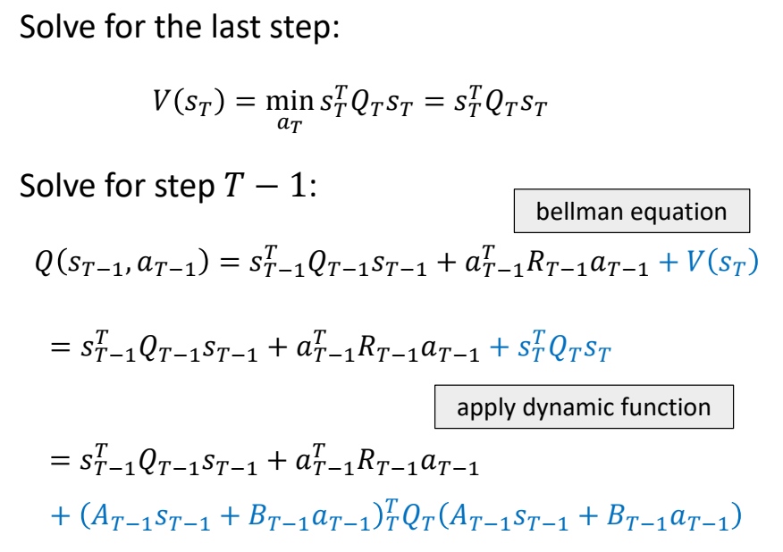
P60
公式整理得：
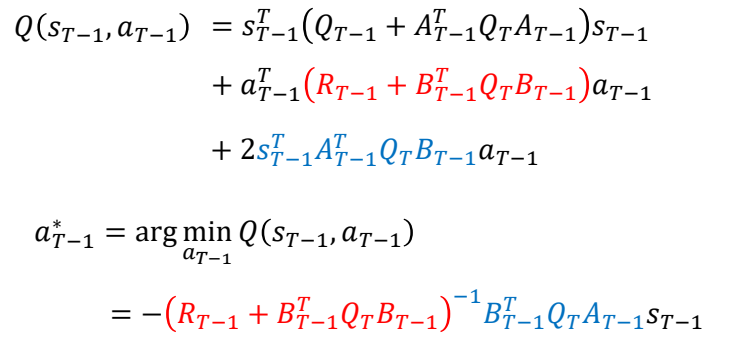
P61 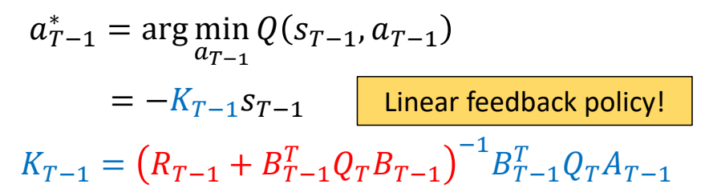
✅ 结论：最优策略与当前状态的关系是矩阵K的关系。
P62
当a取最小值时，求出V：
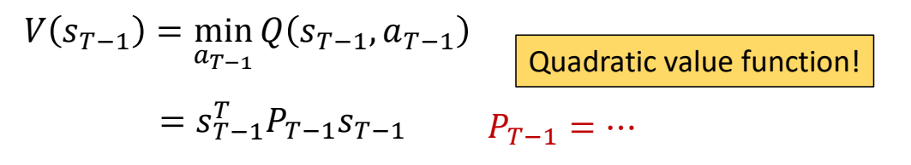
✅ \(V(S_{T-1})\)和\(V(S_{T})\)的形式基本一致，只是P的表示不同。
P63
推导每一步
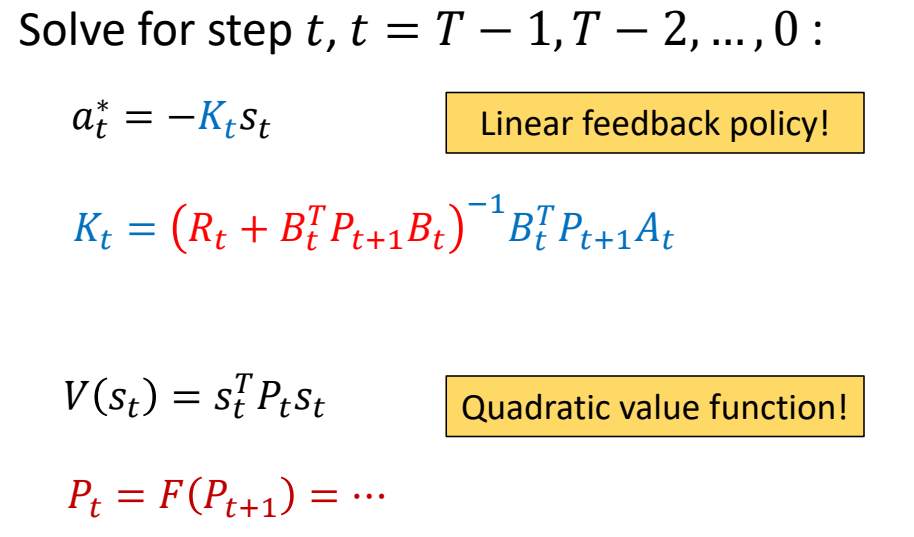
P64
Solution
- LQR is a special class of optimal control problems with
- Linear dynamic function
- Quadratic objective function
- Solution of LQR is a linear feedback policy
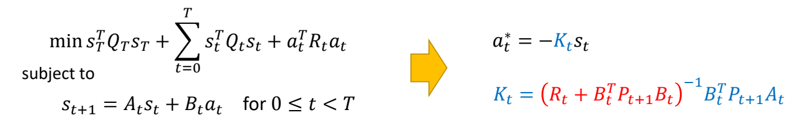
P65
更复杂的情况
- How to deal with
- Nonlinear dynamic function?
- Non-quadratic objective function?
✅ 人体运动涉及到角度旋转，因此是非线性的。
P68
Nonlinear problems
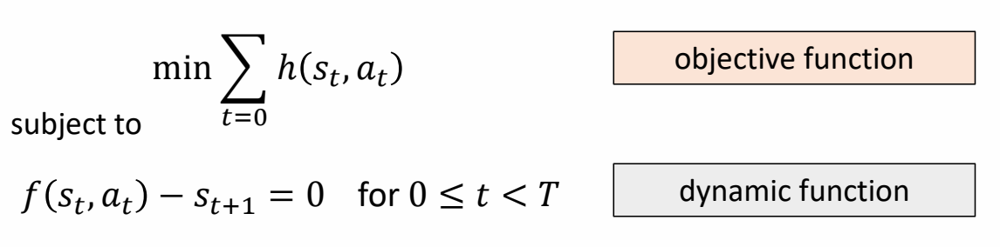
✅ 方法：把问题近似为线性问题。
Approximate cost function as a quadratic function:
✅ 目标函数：泰勒展开，保留二次。
$$ h(s_t,a_t)\approx h(\bar{s}_t ,\bar{a}_t)+\nabla h(\bar{s}_t ,\bar{a}_t)\begin{bmatrix} s_t-\bar{s} _t\\ a_t-\bar{a} _t \end{bmatrix} + \frac{1}{2} \begin{bmatrix} s_t-\bar{s} _t\\ a_t-\bar{a} _t \end{bmatrix}^T\nabla^2h(\bar{s}_t ,\bar{a}_t)\begin{bmatrix} s_t-\bar{s} _t\\ a_t-\bar{a} _t \end{bmatrix} $$
Approximate dynamic function as a linear function:
✅ 转移函数：泰勒展开，保留一次或二次。
$$ f(s_t,a_t)\approx f(\bar{s}_t ,\bar{a}_t)+\nabla f(\bar{s}_t ,\bar{a}_t)\begin{bmatrix} s_t-\bar{s} _t\\ a_t-\bar{a} _t \end{bmatrix} $$
展开为一次项，对应解决算法：iLQR（iterative LQR）
Or a quadratic function:
$$ f(s_t,a_t)\approx \ast \ast \ast \frac{1}{2} \begin{bmatrix} s_t-\bar{s} _t\\ a_t-\bar{a} _t \end{bmatrix}^T\nabla^2f(\bar{s}_t ,\bar{a}_t)\begin{bmatrix} s_t-\bar{s} _t\\ a_t-\bar{a} _t \end{bmatrix} $$
展开为二次项，对应解决算法：DDP（Differential Dynamic Programming）
P69
相关应用
🔎 [Muico et al 2011 - Composite Control of Physically Simulated Characters]
✅ 选择合适的 \(Q\) 和 \(R\)，需要一些工程上的技巧。
✅ 为了求解方程，需要显式地建模运动学方程。
P70
Model-based Method vs. Model-free Method
✅ Model Based 方法，要求 dynamic function 是已知的，但是实际上这个函数可能是（1）未知的（2）不精确的。
✅ 因此Model Based 方法对于复杂问题难以应用，但对于简单问题非常高效。
What if the dynamic function \(f(s,a)\) is not know?
✅ \(f\) 未知只是把 \(f\) 当成一个黑盒子，仍需要根据 \(S_t\) 得到 \(S_{t＋1}\) .
What if the dynamic function \(f(s,a)\) is not accurate?
✅ 不准确来源于（1）测试量误差（2）问题简化
What if the system has noise?
What if the system is highly nonlinear?
P72
Sampling-based Policy Optimization
-
Iterative methods
- Goal: find the optimal policy \(\pi (s;\theta )\) that minimize the objective \(J(\theta )=\sum_{t=0}^{}h(s_t,a_t) \)
- Initialize policy parmeters \(\pi (x;\theta )\)
- Repeat:
- Propose a set of candidate parameters {\(\theta _i \)} according to \(\theta \)
- Simulate the agent under the control of each \( \pi ( \theta _i)\)
- Evaluate the objective function \( J (\theta_i )\) on the simulated state-action sequences
- Update the estimation of \(\theta \) based on {\( J (\theta_i )\)}
-
Example: CMA-ES
✅ 基于采样的方法。
P73
Example: Locomotion Controller with Linear Policy
🔎 [Liu et al. 2012 – Terrain Runner]
P74
Stage 1a: Open-loop Policy
Find open-loop control using SAMCON
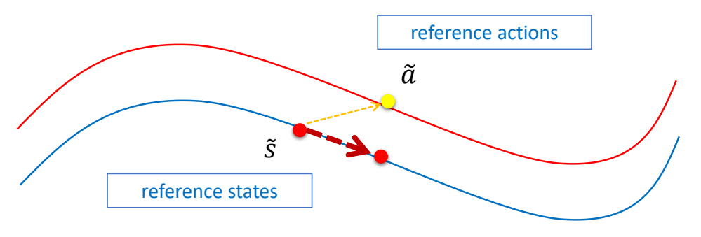
✅ 使用开环轨迹优化得到开环控制轨迹。
P76
Stage 1b: Linear Feedback Policy
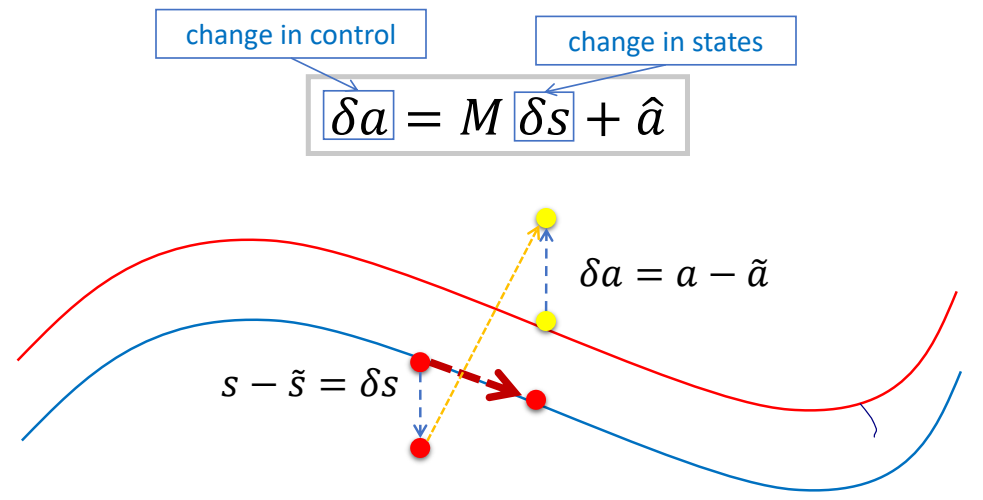
✅ 使用反馈控制更新控制信号。由于假设了线性关系，根据偏离 offset 可直接得到调整 offset.
P78
Stage 1b: Reduced-order Closed-loop Policy
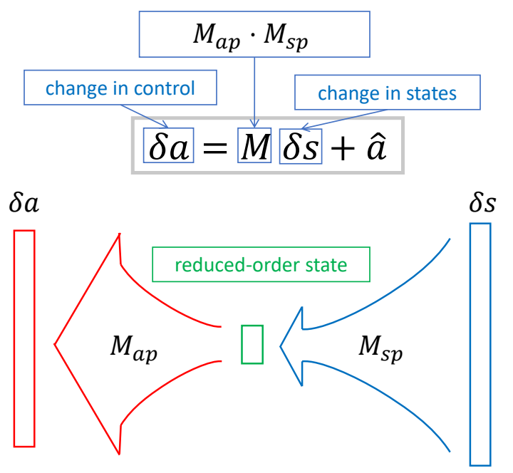
✅ 把 \(M\) 分解为两个矩阵，\(M_{AXB} = M_{AXC}\cdot M_{CXB}\) 如果 \(C\) 比较小，可以明显减少矩阵的参数量。
✅ 好处：(1) 减少参数，减化优化过程。(2) 抹掉状态里不需要的信息。
P79
Manually-selected States: s
- Running: 12 dimensions
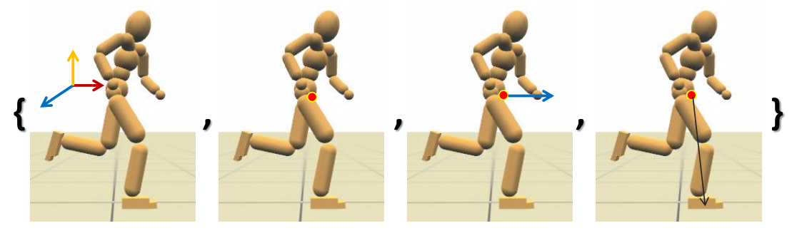
✅ （1）根结点旋转（2）质心位置（3）质心速度（4）支撑脚位置
P80
Manually-selected Controls: a
- for all skills: 9 dimensions
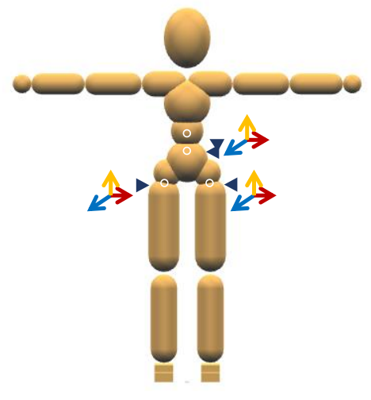
✅ 仅对少数关节加反馈。
P81
Optimization
$$ \delta a=M\delta s+\hat{a} $$
- Optimize \(M\)
- CMA, Covariance Matrix Adaption ([Hansen 2006])
- For the running task:
- #optimization variables: \(12 ^\ast 9 = 108 / (12^\ast 3+3 ^\ast 9) = 63\)
- 12 minutes on 24 cores
P85
Optimal Control \(\Leftrightarrow \) Reinforcement Learning
• RL shares roughly the same overall goal with Optimal Control
$$ \max \sum_{t=0}^{} r (s_t,a_t) $$
✅ 相同点：目标函数相同，是每一时刻的代价函数之和。
• But RL typically does not assume perfect knowledge of system
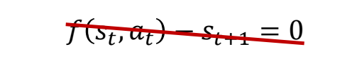
✅ 最优控制要求有精确的运动方程，而 RL 不需要。
- RL can still take advantage of a system model → model-based RL
- The model can be learned from data
$$ s_{t+1}=f(s_t,a_t;\theta ) $$
- The model can be learned from data
✅ RL 通过不断与世界交互进行采样。
P87
Markov Decision Process (MDP)
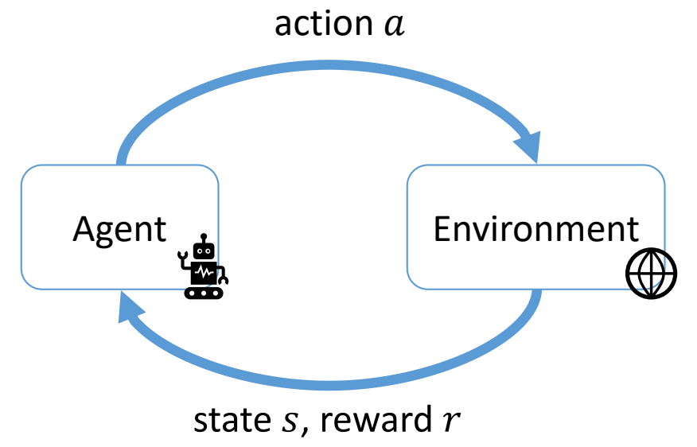
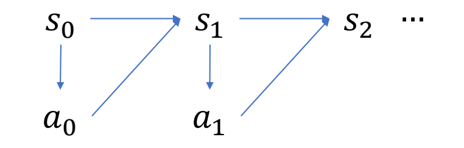
| State | \(\quad s_t \quad \quad \) |
| Action | \(\quad a_t\) |
| Policy | \(\quad \quad a_t\sim \pi (\cdot \mid s_t)\) |
| Transition probability | \(\quad \quad s_{t+1}\sim p (\cdot \mid s_t,a_t)\) |
| Reward | \(\quad \quad r_t=r (s_t,a_t)\) |
| Return | \(R = \sum _{t}^{} \gamma ^t r (s_t,a_t)\) |
✅ 真实场景中轨迹无限长，会导到 \(R\) 无限大。
✅ 因此会使用小于 1 的 \(r,t\) 越大则对结果的影响越小。
P88
跟踪问题变成MDP问题
Trajectory
$$ \begin{matrix} \tau =& s_0 & a_0 & s_1 & a_1 & s_2&\dots \end{matrix} $$
Reward
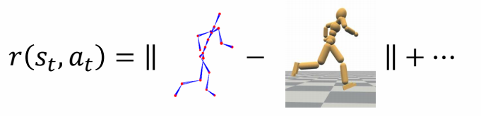
P90
MDP问题的数学描述
✅ Markov 性质：当当前状态已知的情况下，下一时刻状态只与当前状态相关，而不与之前任一时刻状态相关。
MDP is a discrete-time stochastic control process.
It provides a mathematical framework for modeling decision making in situations
where outcomes are partly random and partly under the control of a decision maker.
A MDP problem:
\(\mathcal{M}\) = {\(S,A,p,r\)}
\(S\): state space
\(A\): action space
p：状态转移概率，即运动学方程。
r：代价函数。
P91
Solve for a policy \(\pi (a\mid s)\) that optimize the expected return
$$ J=E[R]=E_{\tau \sim \pi }[\sum_{t}^{} \gamma ^tr(s_t,a_t)] $$
✅ 求解一个policy \(\pi \) 使期望最优，而不是直接找最优解。
Overall all trajectories \(\tau \) = { \(s_0, a_0 , s_1 , a_1 , \dots \)} induced by \(\pi \)
✅ 假设 \(\pi \) 函数和 \(p\) 函数都是有噪音的，即得到的结果不是确定值，而是以一定概率得到某个结果。这是与最优控制问题的区别。
P93
Bellman Equations
In optimal control:
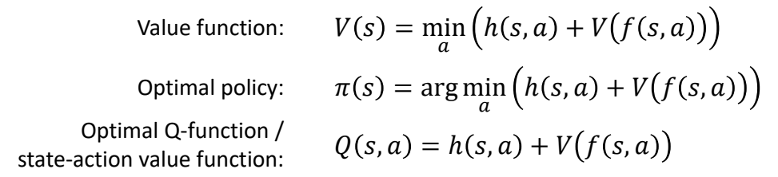
In RL control:
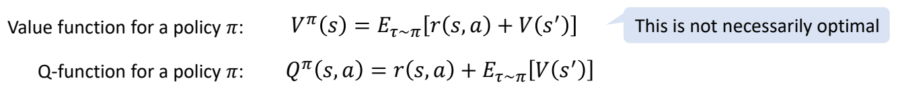
✅ 此处的\(\pi \)是某一个策略，而不是最优策略。
P94
How to Solve MDP
Value-based Methods
- Learning the value function/Q-function using the Bellman equations
- Evaluation the policy as
$$ \pi (s) = \arg \min_{a} Q(s,a) $$
- Typically used for discrete problems
- Example: Value iteration, Q-l a ning, DQN, …
P95
🔎 DQN [Mnih et al. 2015, Human-level control through deep reinforcement learning]
P96
相关工作
🔎 [Liu et al. 2017: Learning to Schedule Control Fragments ]
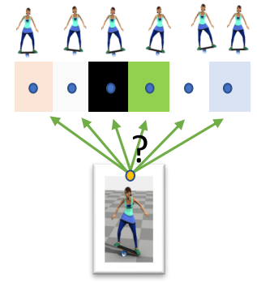
✅ DQN 方法要求控制空间必须是离散的，但状态空间可以是连续的。
✅ 因此可用于高阶的控制。
P97
Policy Gradient approach
-
Learning the value function/Q-function using the Bellman equations
-
Compute approximate policy gradient according to value functions using Monte-Carlo method
-
Update the policy using policy gradient
-
Suitable for continuous problems
-
Exa pl : REINFORCE, TRPO, PPO, …
✅ policy grodient 是 Value function 对状态参数的求导。但这个没法算，所以用统计的方法得到近似。
✅ 特点是显示定义 Dolicy 函数。对连续问题更有效。
P98
相关工作
| 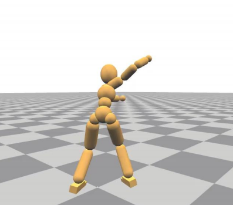 | 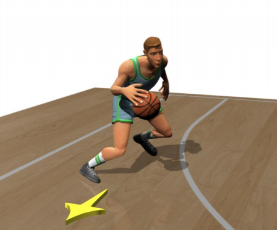 | 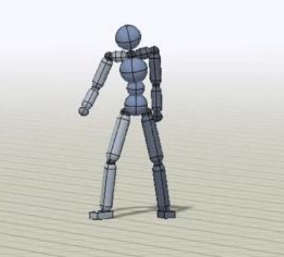 |
| [Liu et al. 2016. ControlGraphs] | [Liu et al. 2018] | [Peng et al. 2018. DeepMimic] |
P100
Generative Control Policies
✅ 使用RL learning，加上一点点轨迹优化的控制，就可以实现非常复杂的动作。
🔎 [Yao et al. Control VAE]
P101
What’s Next?
Digital Cerebellum
Large Pretrained Model for Motion Control
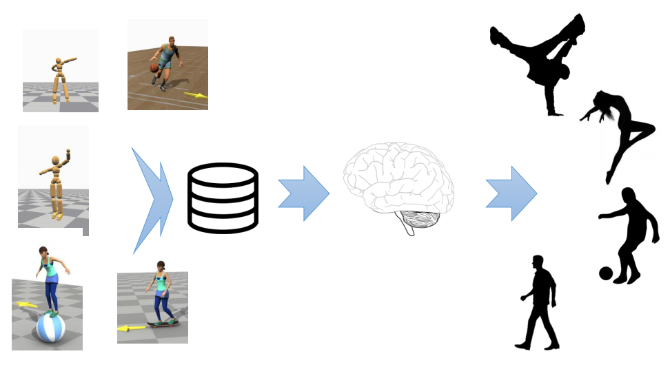
P102
Cross-modality Generation
- \(\Leftrightarrow\) LLM \(\Leftrightarrow\) Text/Audio \(\Leftrightarrow\) Motion/Control \(\Leftrightarrow\) Image/Video \(\Leftrightarrow\)
- Digital Actor?
本文出自CaterpillarStudyGroup，转载请注明出处。
https://caterpillarstudygroup.github.io/GAMES105_mdbook/